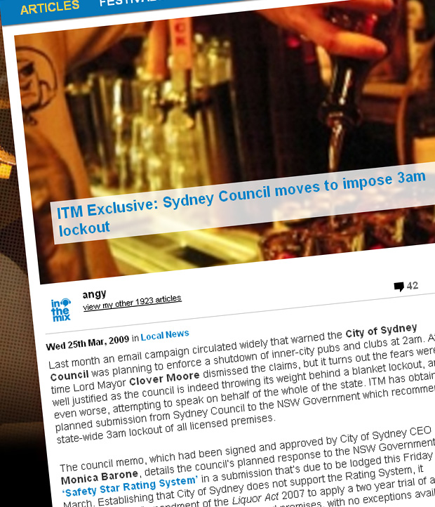

ITM Exclusive: Sydney Council moves to impose 3am lockout
{kind=link}

Last month an email campaign circulated widely that warned the City of Sydney Council was planning to enforce a shutdown of inner-city pubs and clubs at 2am. At the time Lord Mayor Clover Moore dismissed the claims, but it turns out the fears were well justified as the council is indeed throwing its weight behind a blanket lockout, and even worse, attempting to speak on behalf of the whole of the state. ITM has obtained a planned submission from Sydney Council to the NSW Government which recommends a state-wide 3am lockout of all licensed premises.
The council memo, which had been signed and approved by City of Sydney CEO Monica Barone, details the council’s planned response to the NSW Government’s ‘Safety Star Rating System’ in a submission that’s due to be lodged this Friday 27th March. Establishing that City of Sydney does not support the Rating System, it recommends an “amendment of the Liquor Act 2007 to apply a two year trial of a state-wide retrospective 3am lockout on all licensed premises, with no exceptions available for any venue, the same as the Queensland Government lockout.”
The submission also recommends a further amendment of the Liquor Act 2007 “to cap the provision of any further 24 hour trading liquor licenses”, as well as suggesting the NSW Government adopts a model of liquor license trading hours where extended trading hours “are regarded as a privilege to be earned.”
Liberal councilor Shayne Mallard, a well known opponent of independent Clover Moore, has spoken out to ITM in sharp criticism of Sydney Council’s “collective punishment” approach to the issue of alcohol related violence. “There’s an agenda to shut bars down at 2 or 3 in the morning, there’s no doubt about that,” he told ITM. “It’s a reaction to the loud campaign run by a very influential and well resourced minority in our community. The anti-alcohol lobby has reared its head very strong in this city, and they’ve got the ear of Clover Moore and her councilors. They’re all ageing baby boomers getting towards the end of their careers, and they’ve decided there’s too much fun and good times going on in this city… they had their good times, but they want the current generation of people to be home by 2am and not drinking alcopops.”
Whether the NSW Government adopts the recommendations or not, Mallard warns that the Sydney Council will move forward with its plans to restrict the opening hours of inner-city Sydney venues. Clover Moore implied the exact opposite when she responded to the furor surrounding the email campaign last month. “Council has no power or desire to close down every late night premises at 2am,” the statement claimed. However, Mallard warns of the “backdoor” approach to restricting trading.
“Clover Moore said in her letter in response to the email campaign that the council has no power. That’s technically correct, but it has been able to do it in the past.” He claims the council has the instruments to impose new trading conditions by whittling down the venues on a case by case basis. “In my experience, the council can retrospectively pick off all the venues one by one… by making them comply to the new policy when they make applications to change the layout of their bar, put in a new staircase, whatever it is. The council can put other conditions on their hotels.”
Are we facing a 3am venue lockout throughout NSW? Stay tuned to ITM for updates.